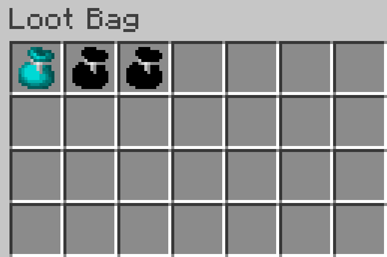
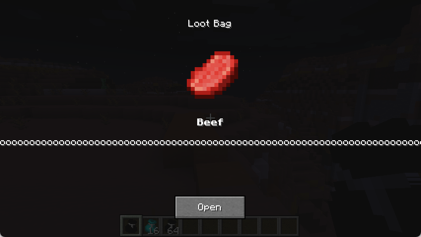
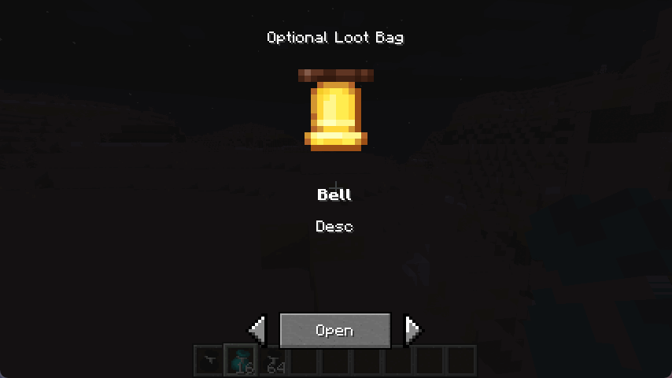
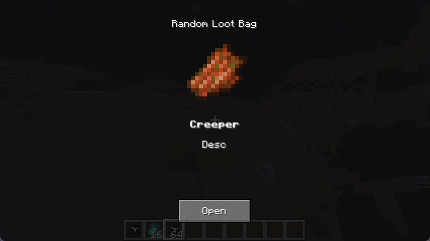

Loot Bag
🪄Introduction
Another loot bag mod, designed for modpacks.
Versions and Installation
| Minecraft | Loader | Java | Additional mod dependencies |
|---|---|---|---|
| 1.20.1 | Fabric | 17 | Fabric API |
| 1.20.1 | Forge | 17 | None |
| 1.21.1 | Fabric | 21 | Fabric API |
| 1.21.1 | NeoForge | 21 | None |
Choose the mod file matching your Minecraft version and loader. For multiplayer, install the mod on both the client and server.
How to Use

Right-click to open a preview screen. Single and random loot bags support quick opening while sneaking: use the main hand to open one bag, or the offhand to open the whole stack. Optional loot bags require you to choose a reward in the screen.
(Single) Loot Bag
Contains a single set of loot.

Optional Loot Bag
Contains multiple sets of loot, and you can choose to obtain one of them.

Random Loot Bag
Contains multiple sets of loot, and you can obtain a random set of them.

⚙️Configuration
Since version 1.2.0, loot bags are defined through data packs instead of the old configuration files. When upgrading an older modpack, rewrite the configuration as a data pack. BRRP is no longer required.
Example Data Packs
Use the example for your Minecraft version and loader, and keep its pack.mcmeta:
The main data-pack directories are the same across these versions:
- Bag definitions:
data/<namespace>/loot-bag/bag/<name>.json - Reward content definitions:
data/<namespace>/loot-bag/content/<name>.json
Item-stack data depends on the Minecraft version: 1.20.1 uses id, Count and an optional tag; 1.21.1 uses id, count and optional components. Do not mix item data from the two formats.
Mod developers can also use the provided provider classes to generate data or add more loot bag types.
Bag Items and Version Migration
All loot bags share the item ID loot-bag:loot_bag and reference data-pack definitions using a bag identifier. Forge and NeoForge use loot_bag as the loader mod ID, while the item and data-pack namespace remains loot-bag.
After installing and enabling the example data pack, obtain its single loot bag with the command for your version:
Minecraft 1.20.1 (Fabric / Forge) stores the identifier in the NBT field BagId:
/give @s loot-bag:loot_bag{BagId:"loot-bag:single"}
Minecraft 1.21.1 (Fabric / NeoForge) stores the identifier in the custom data component loot-bag:bag_id:
/give @s loot-bag:loot_bag[loot-bag:bag_id="loot-bag:single"]
Replace loot-bag:single with your own bag identifier. Version 1.21.1 does not read the old BagId field, including BagId inside minecraft:custom_data; update related commands and item data when upgrading.
✉️Feedback
Report bugs or suggestions on GitHub Issues, including your Minecraft version, loader and mod version.